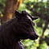
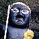
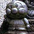

岡山県
＃131 岡山牛尽くし
鼻ぐり塚、吉備津神社、牛窓、田倉牛神社、牛ヶ首島
＃121 源宗寺
「昭和の奇僧」がつくった脳内物質全開パラダイス！
＃120 大聖院
真面目なんだかふざけてるんだか・・・
山口県
珍寺大道場 HOME

 ＃084 観世音寺
＃084 観世音寺 ＃085 平田一式飾り
＃085 平田一式飾り ＃083 加賀の潜戸
＃083 加賀の潜戸 ＃036 耕三寺
＃036 耕三寺 ＃230 茂兵衛堂
＃230 茂兵衛堂